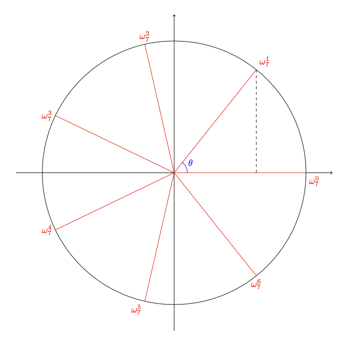

Recently, I've learnt Fast Fourier Transform. Here's my feelings and notes.
When we are solving for \(x\) in equation \(x^n=1\), we can get \(n\) roots. The roots is called "Root of Unity". They are called \(\omega_n^1\), \(\omega_n^2\) and so on. To get them, consider a unit circle in complex plane like the figure below. Then the root of unity is all the intersections between the segments and the circle, because if we raised one of them to the power of \(n\), we get 1.

Connect all the Roots of Unity and we can find that they divided the circle into \(n\) pieces, so we can find that \[\angle\theta = \frac{360^{\circ}}{n}\] Then we got \[\omega_n^1 = \cos\theta+i\sin\theta = \cos\frac{360^{\circ}}{n}+i\sin\frac{360^{\circ}}{n}\] by drawing a vertical line and using the trigonometric functions.
Suppose each arithmetic operation in a complex plane is an operation to a vector, then multiply x by \(omega_n^1\) can be considered as rotating \(\vec{x}\), which conncts from the origin to \(x\) in the complex plane, by \(\theta\) degrees that is \(\frac{360^{\circ}}{n}\) degrees.
We can get that \[ \omega_n^i = \left(\omega_n^1\right)^n \] More generally, we can also get that \[ \omega_n^{xy} = \left(\omega_n^x\right)^y \]
So far, we can get all the Roots of Unity for a certain \(n\). Now we should also find other properties of Root of Unity.